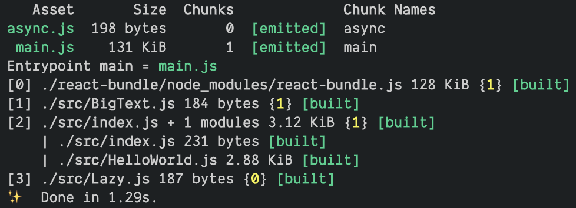
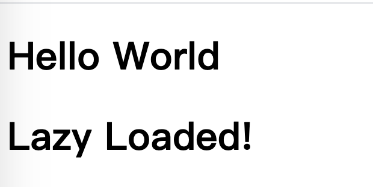

webpack原理 - 作者教你手把手打包
本质上，webpack 是一个用于现代 JavaScript 应用程序的静态模块打包工具。当 webpack 处理应用程序时，它会在内部构建一个 依赖图(dependency graph)，此依赖图对应映射到项目所需的每个模块，并生成一个或多个 bundle。
为了更好地理解模块打包工具背后的理念，以及在底层它们是如何运作的，在观看 Tobias Koppers 放在油管的视频后整理本文，后续将录制视频帮助理解，demo地址将在底部放出。
Demo介绍
视频1从开头介绍了整个项目的大体内容，位于 src 文件中：项目以 React 作为示范，引入一个异步懒加载组件（lazy component）展示到根组件中。
项目目录如下：
1 | ├── README.md |
主
webpack配置文件位于
wepback.config.js，主要内容是使用babel-loader解析js文件，然后配置了 3 个alias解析react、react-dom以及react-bundle预打包
webpack配置文件位于
react-bundler/webpack.config.js用于将react和react-dom以commonjs规范打包到react-bundler/dist/react-bundle.js中，这个地址也是主webpack中最后的alias指定的地址。这一步预打包是为了更方便后续的演示。
安装完依赖之后，我们可以先执行一波 yarn webpack --display-modules 查看 webpack 打包后的结果

使用 webpack —display-modules 查看打包结果
手动模拟打包流程
webpack 的打包流程如 one-day-bundler 中的各文件夹所示，接下来我们将手动模拟打包流程
第一步：生成模块依赖图 （module-graph）
自 webpack4 开始，大部分的配置都内置了，这里的解析入口从 src/index.js 开始：
1 | Modules: |
找到入口文件后我们的 rules 会解析到 .js 后缀的文件，通过 babel-loader 转译到 modules 中，我们可以手动模拟这个过程：
yarn babel src/index.js -d one-day-bundler/10-module-graph/modules
接着以 src/index.js 开始，静态分析 ESM 的 import 发现引用了 react、react-dom 和 ./HelloWorld。由于 react、react-dom 已经在前面预编译为 commonjs 规范，这里就不需要继续往下解析了。
在 ./HelloWorld 中解析到以下三处，加入到 module graph 中
1 | import React from "react"; // line: 9 |
与前面相同，继续手动模拟 babel-loader 的过程
yarn babel src/HelloWorld.js -d one-day-bundler/10-module-graph/modules
yarn babel src/BigText.js -d one-day-bundler/10-module-graph/modules
yarn babel src/Lazy.js -d one-day-bundler/10-module-graph/modules
经历以上三步内容，我们可以在目录中看到以下结构：
1 | one-day-bundler/10-module-graph/modules/src |
再进入 src/BigText.js 以及 src/Lazy.js 分析，最终的 module graph 图如下：
1 | Modules: |
第二步：生成区块图（chunk graph）
这一步将各个模块分发到chunk中，chunk 有两种形式：
initial(初始化)是入口起点的 main chunk。此 chunk 包含为入口起点指定的所有模块及其依赖项。non-initial是可以延迟加载的块。可能会出现在使用 动态导入(dynamic imports) 或者 SplitChunksPlugin 时。
分发完毕后 chunk graph 如下
1 | ChunkGroups: |
第三步：优化可用模块（optimize）
在上一步的基础上，我们继续优化可用模块；在这个Demo中，这一步的作用是剔除 async 中已经存在的 module 。
main chunk 由于是入口，无任何已获取的 module，所以为空；但是到 async chunk，在加载这个 chunk 时我们已经获取了 main chunk 中所有的 module，我们可以将其中的 module 都复制到 async 的 availableModules 中，同时剔除重复出现的 react-bundle.js 和 src/BigText.js ，优化完毕后的区块图（chunk graph）如下：
1 | optimization.availableModules |
第四步：串联模块（concatenate-modules）
这一步会按以下规则将模块串联到一起：
首先确保入口是 ESM 的规范，在此基础上检查它的依赖模块是否符合：
- 同样也是
ESM规范 - 正常的
import（不是异步import） - 处于同一个区块（
chunk） - all importer must be included （这条没懂，求读者理解）
最后一条规则是尝试所有的依赖，经过以上条件筛选后仅有 src/HelloWorld.js 与 src/index.js 同为 ESM 规范；src/index.js 正常引用 src/HelloWorld.js 且两者处于同一区块（chunk），因此我们可以将两者串联
1 | Modules: |
串联后模块依赖图（ module graph ）变为如下所示：
1 | * src/index.js + 1 module |
第五步：标号
这一步将 module 和 chunk 按序标记，方便后续引用；实际 wepback 按照 production mode 进行打包的产物，也是以数字标记的。如果按照 development mode 打包则是以解析的相对路径命名的。
1 | Modules: |
第六步：模块代码生成 （code-generation-modules）
这里是关键的一步，从此处开始将会将所有的 module 包裹一层蛋清加面包糠然后炸至金黄（🐶），完成后会将所有模块打包至 chunk 中，此处即为 demo 里给的 runtime.js 和 chunk.js。
这里的蛋清加面包糠由于前面预处理 react-bundle 时使用的是 commonjs2 规范，所以与其相关的 runtime.js 也要和 exports、 module 打交道。
runtime.js 在浏览器运行过程中，webpack 用来连接模块化应用程序所需的所有代码。它包含：在模块交互时，连接模块所需的加载和解析逻辑。其实无论使用什么模块规范，所有的 import 或者 require 、define 都会转变为 __webpack_require__ （本文既视频和demo中提到的 __magic__），通过 __webpack_require__ 和对应的模块标识符（这里是第五步标注的数字）来找到对应的模块
在模块代码生成的过程中参考的都是已经在第五步标号完的 Module Graph 和 Chunk Graph。
首先我们复制由第一步 babel-loader 转译的文件夹到目录，依次对如下文件做包装处理：
1 | one-day-bundler/60-code-generation-modules/modules/src |
BigText.js 中引用 React，根据 Module Graph 得出从 module [1] 得到模块的导出内容
原 BigText.js 中的内容：
1 | import React from "react"; |
使用一个魔术方法 （视频中作者称之为 __magic__) 对其进行改造，将其包装在一个函数中并且传入 commonjs 规范导出模块所需的 exports 对象；
替换 import React from "react"; 变为 var X = __magic__(1);
这里值得一提的是 ESM 的默认导出内容会挂载在 X.default 上，因此需要把 React 变量都替换为 X.default
替换完毕后的内容如下：
1 | (function(__magic__, exports) { |
接着处理 Lazy.js ，与 BigText.js 相似，唯一的不同在于多导入了一个 BigText.js ，包装完毕后如下：
1 | (function (__magic__, exports, module) { |
最后需要处理的就是 index.js + 1 module 这一部分，在第四步中已经通过串联模块将HelloWorld.js 和 index.js 合并到一起了，这一部分的代码比较多，但是做的事情与前面两步没有什么不同，依旧是根据 import 的来源找到 Module Graph 的序号，用 __magic__ 引用后使用，将文件整合完毕后就可以删除 HelloWorld.js 了。
值得一提的是在 31 行 出现的：
1 | import( /* webpackChunkName: "async" */"./Lazy").then(function (_ref) { |
这里涉及到异步模块的加载，也就是需要第二个 chunk 的参与，即可以延迟加载的 async chunk ，其背后的核心原理就是 jsonp。
一般我们如何实现一个 jsonp ？抛开一堆过期时间、回调名称等等的拓展，核心的内容无非就是如下所示：
1 | var script = document.createElement('script') // 创建一个标签 |
那如何完成 31 行 中对 import( /* webpackChunkName: "async" */"./Lazy") 的改造呢？
我们观察到这句动态导入语句后使用了 Promise.then 实例方法，于是这个 jsonp 的实现应当用 Promise 包装一下，将 resolve 的控制权交出；同时在 async chunk 中调用 resolve 并将 async chunk 中的模块都加入到 modules 中。
这些工具函数都放置在 runtime.js 文件中，核心实现如下：
1 | __magic__.loadChunk = function(chunkId) { |
经过改造后 31 行 的代码就变为如下
1 | __magic__.loadChunk(0).then(__magic__.bind(null, 3)).then(function (_ref) { |
第七步：资源整合（asstes）
这一步的主要工作就是缝合怪，把第六步打包出来的 Modules 文件下的内容填充到 runtime 和 chunk 中。
runtime 文件：
1 | !(function (modules) { |
chunk 文件：
1 | window.magicJsonp(0, { |
这里还有一个知识点，在 index.js 的 31行 有个这样的注释
1 | /* webpackChunkName: "async" */ |
所以需要将 chunk 命名为 async；同时根目录的入口文件 index.html 中引用的是 main.js ，所以 runtime.js 也需要更名。
修改完毕后，在浏览器打开 index.html 我们就能看到以下内容：

Demo地址
原作者 demo 地址：https://github.com/sokra/webpack-meetup-2018-05
本文 Fork 整理后： https://github.com/hemisu/webpack-meetup-2018-05
参考链接
[1]: Webpack founder Tobias Koppers demos bundling live by hand, https://www.youtube.com/watch?v=UNMkLHzofQI
[2]: webpack docs, https://webpack.docschina.org/